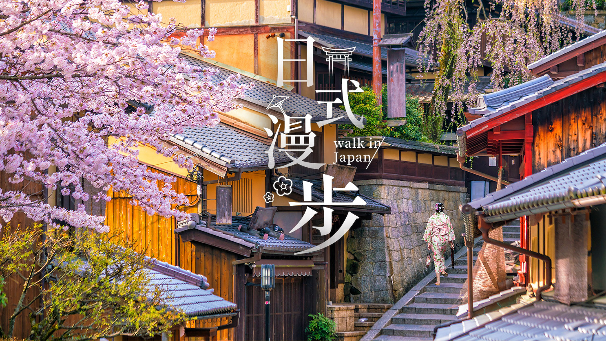

TOP
#京都伏見稻荷大社
#京都嵐山竹林
#京都嵐山蹉峨車站
#祇園町南側
位於日本京都市伏見區內的神社，
是遍及日本全國各地
約四萬多所的稻荷神社之總本社，
以境內所擁有的「千本鳥居」聞名。
位於京都右京區，嵐山車站附近的竹林，
蜿蜒而鬱鬱蔥蔥，竹林裡有寺廟、墓園、穿插其間。
穿著和服搭乘著人力車漫步於竹林間，
是難得的旅遊體驗。
先搭乘至JR嵯峨嵐山站，
再轉乘嵐山小火車前往山上，
四季美麗的嵐山，
在秋冬賞楓之際更是一票難求。
是日本少數還存有的花街，
不經意間還是能看見藝妓與舞妓路過的曼妙身影，
寂靜的街道上卻彷彿瀰漫著一股大正時期的溫柔氣息，
夜晚與白日都頗有一番風情。
大阪在地人介紹的秘密景點!
大阪在地有名且獨特的古著小店街你知道嗎?
各式七零年代的流行復古小物應有盡有!
那些在旅遊書中找不到的私藏小景點，
就讓在大阪工作生活了15年的資深部落客，
帶著你一起來認識認識道地的大阪在地生活吧!

經典的日本文化古都，來京都吧!
漫步京都街道，濃濃的日本文化氛圍充滿四周，
看著路過的一位位如花似蝶的和服姑娘，
想知道哪裡能穿著經典和服體驗一天嗎?
讓關西在地留學生告訴你CP值最高的和服體驗與熱門拍攝地!
香味四溢的神戶牛，吃過了嗎?
但馬牛是和牛的一種，飼養方式獨特，
其肉則為日本料理中的珍饈，
特性表現為美味、肥嫩以及外表呈現的大理石紋理。
當地和牛專門名店優惠這邊買!
讓你吃的開心放心又安心!